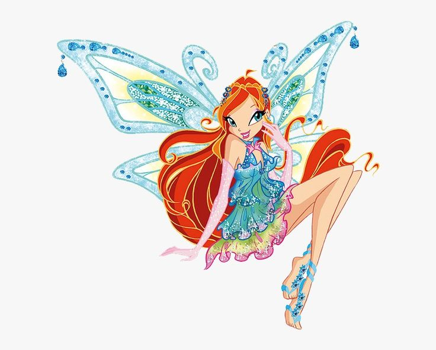

Блум — лидер клуба Винкс, смелая и добрая фея Огня Дракона, обладающая огромной магической силой.
Блум — одна из самых сильных и важных фей в истории Клуба Винкс. Она является принцессой планеты Домино и владеет древней магической силой Огня Дракона. Блум отличается решительностью, смелым характером и готовностью всегда прийти на помощь друзьям. Именно она чаще всего становится лидером команды в трудных ситуациях. Несмотря на серьёзные испытания, Блум не теряет веру в себя и вдохновляет остальных фей.